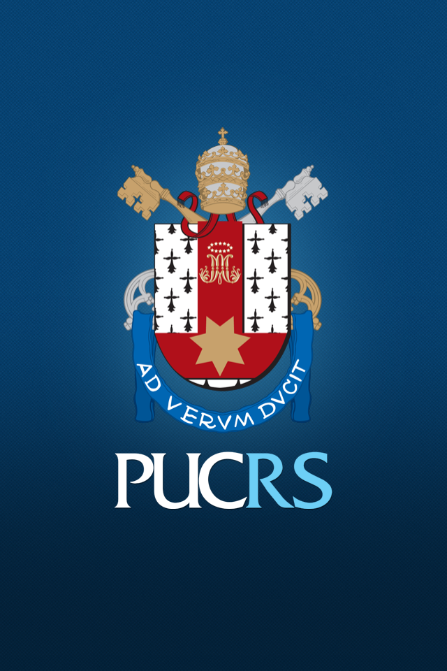
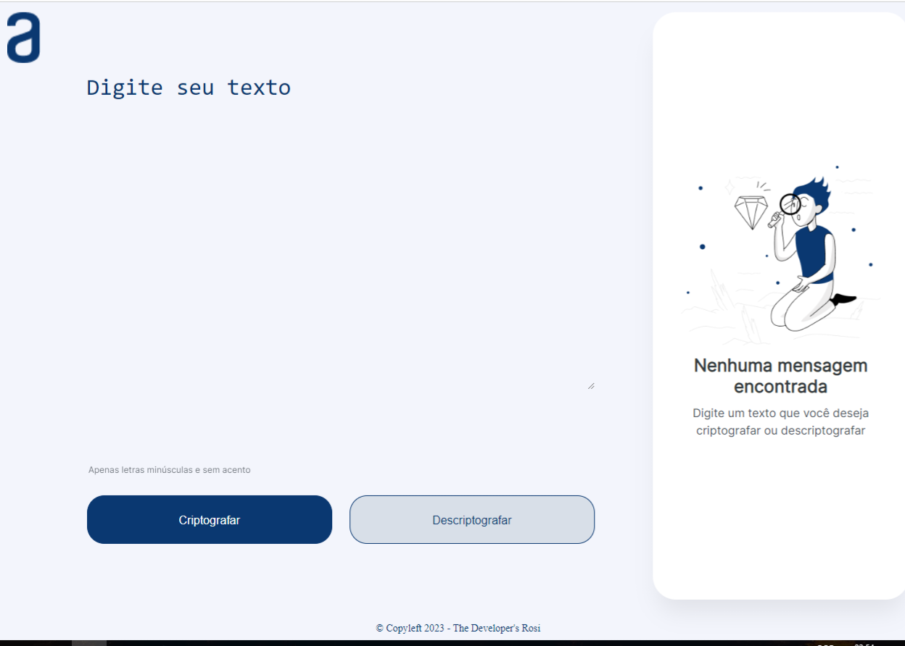
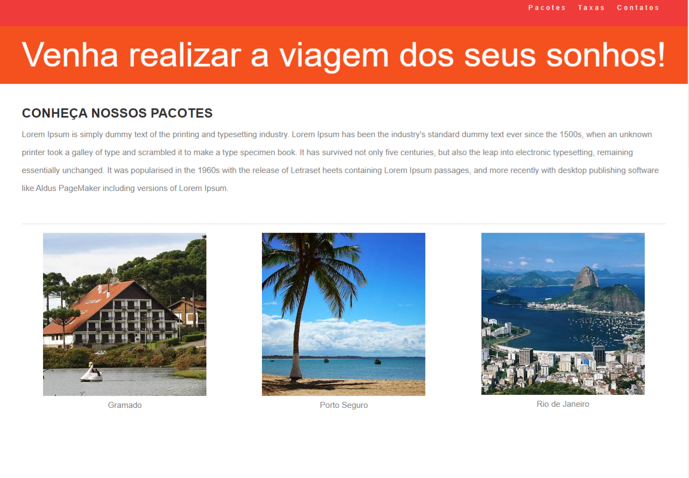

Sobre Mim
Olá!
Sou a Rosicleide, uma desenvolvedora apaixonada por criar soluções digitais criativas e funcionais.
Meu objetivo é fornecer soluções personalizadas e eficientes para atender às necessidades únicas de
cada projeto. Trabalho com HTML, CSS e JavaScript, estou aprendendo PHP
e frameworks populares como React. Além disso, tenho conhecimentos em bancos de dados relacionais
(MySQL) e Power BI. Além da minha experiência técnica, sou uma comunicadora eficaz e valorizo a
colaboração em equipe. Acredito que o diálogo constante com os clientes e colegas de equipe é
fundamental para o sucesso de qualquer projeto. Estou sempre aberto a sugestões e feedbacks,
pois acredito que a melhoria contínua é essencial para fornecer soluções de qualidade.
Neste portfólio, você encontrará uma seleção dos meus projetos mais recentes. Cada um deles
representa um desafio único e mostra meu estilo de desenvolvimento limpo, eficiente e orientado
para resultados. Fique à vontade para explorar os projetos e ficarei feliz em responder a quaisquer
perguntas ou fornecer mais informações sobre eles.
Se você está procurando um desenvolvedora
comprometida em transformar suas ideias em realidade, estou pronta para ajudar. Entre em contato
comigo para discutirmos suas necessidades e como podemos trabalhar juntos para alcançar seus
objetivos digitais. Agradeço por visitar meu portfólio e espero ter a oportunidade de colaborar
com você em breve!
Hard Skills
HTML
CSS
JAVASCRIPT
MySQL
PHP
Ferramentas que já usei

Sobre a minha carreira
Sou formada em Gestão em Recursos Humanos pela Estácio UniRadial e Pós Graduada em Gestão de Pessoas pela PucRS. Sou uma profissional apaixonada por desafios e pela constante busca por crescimento pessoal e profissional. Após obter uma formação em Gestão em Recursos Humanos, decidi embarcar em uma emocionante jornada de transição de carreira para a área de programação. Ao longo dos anos, pude desenvolver habilidades valiosas em recrutamento, treinamento e desenvolvimento de talentos, mas senti que algo estava faltando em minha trajetória profissional. Com uma curiosidade crescente e uma paixão pela tecnologia, decidi enfrentar o desafio de aprender a programar. Iniciei minha jornada estudando por conta própria, mergulhando em cursos online, tutoriais e materiais educacionais. Investi horas preciosas após o trabalho para aprender novas linguagens de programação, conceitos de desenvolvimento web e lógica de programação. Enquanto avançava em meus estudos, percebi a importância de obter uma educação formal para consolidar meus conhecimentos e me sentir confiante em minha nova área de atuação. Decidi me matricular em um curso técnico de programação, que me proporcionou a oportunidade de aprofundar meu conhecimento em tópicos avançados, trabalhar em projetos práticos e interagir com outros estudantes e profissionais da área. Durante minha jornada de transição, enfrentei desafios e momentos de frustração. Porém, minha persistência e determinação foram fundamentais para seguir em frente. Busquei ajuda em comunidades online, participei de grupos de estudos e aproveitei cada oportunidade para aprender com meus erros e evoluir. Hoje, estou entusiasmada para dar o próximo passo em minha carreira e encontrar o emprego que me permitirá colocar em prática meus conhecimentos e contribuir para projetos desafiadores. Estou ciente de que cada etapa dessa transição requer esforço, dedicação e paciência. Estou determinada a aproveitar todas as oportunidades que surgirem e a continuar aprendendo e evoluindo na área de programação.
Formação Acadêmica

Análise e Desenvolvimento de Sistemas
2023 - Senac
Pós Graduação em Gestão de Pessoas
2022 - PUCRS

Gestão em Recursos Humanos
2010 - Estácio UniRadial
Cursos Livre

Oracle Next Education - Front-End
2023 - Alura
Programação Web
2023 - Senai

Front-End
2023 - Senai
Projetos
Clone Netflix
Em curso de Front-End que fiz no Senai. Comecei criando a estrutura do site usando HTML, definindo a hierarquia de elementos. Esse processo de aprendizado foi uma oportunidade valiosa para aplicar meus conhecimentos em HTML e CSS e consolidar o que aprendi. Foi gratificante ver meu site ganhar vida e funcionar corretamente nos navegadores. Além disso, fiquei animado em compartilhar meu trabalho e receber feedback construtivo de outros desenvolvedores.

Barbearia Alura
Em um projeto da Oracle Next Education, junto com a Alura, realizei esse pequeno projeto, onde pude aprender estrutura básica do site usando HTML, definindo a hierarquia de elementos e criando uma navegação simples. Em seguida, mergulhei no mundo do CSS para adicionar estilo e personalidade ao projeto. Utilizei técnicas de design responsivo para garantir que o site fosse adaptável a diferentes dispositivos e tamanhos de tela.

Decodificador de texto com Javascript
Em um projeto da Oracle Next Education, junto com a Alura, realizei esse pequeno decodificador de texto, usando HTML, CSS e JavaScript, esse foi meu primeiro contato com Javascript. Inicialmente tive um pouco de dificuldade, porém depois tudo se tornou mais fácil.
Banco de Dados Relacional
Em um curso de Programação Web do Senac, aprendi sobre Banco De Dados Relacional. Meu objetivo principal era criar um banco de dados funcional e eficiente para uma aplicação hipotética de gerenciamento de tarefas. Comecei projetando a estrutura do banco de dados, definindo as tabelas, os relacionamentos entre elas e as chaves primárias e estrangeiras necessárias para garantir a integridade dos dados.

Agência de Turismo
Em um projeto da Descomplica com a Nubank, aprendi sobre HTML, CSS, Javascript e novas ferrametas como Bootstrap e React. Durante o processo, aprendi a importância de um código bem estruturado e organizado. Utilizei técnicas de design responsivo para garantir que o site fosse adaptável a diferentes dispositivos e tamanhos de tela.
Certificações
AI-900 - Microsoft - 2023
DP-900 - Microsoft - 2023
 (1).png)
AZ-900 - Microsoft - 2023